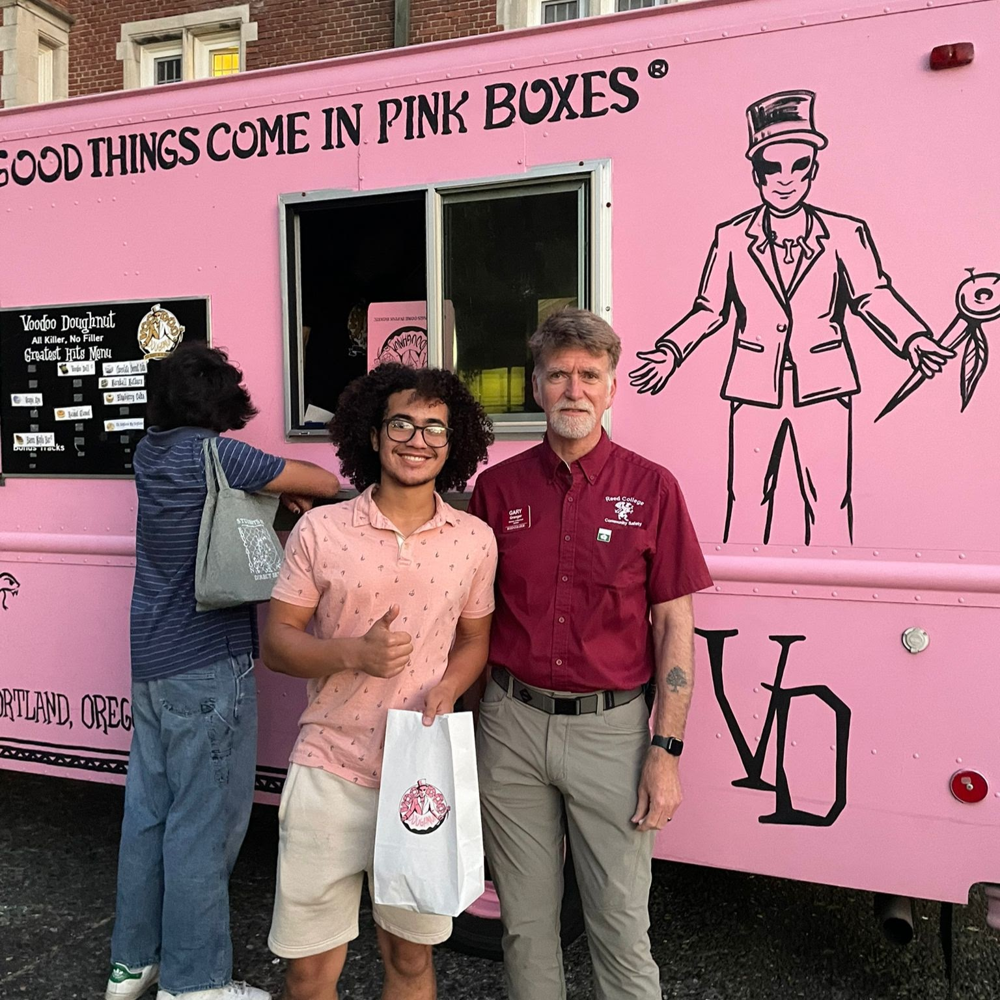
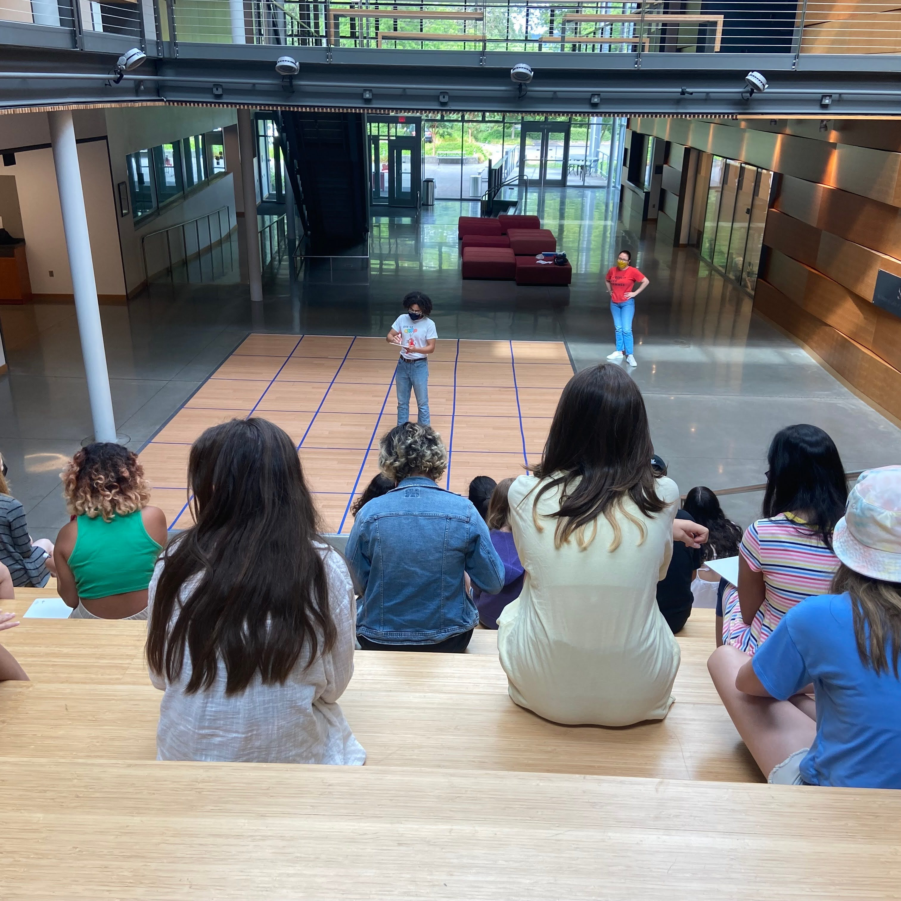

Over the past 8 years, I have been creating, fostering, and advancing community organizations for those populations most in need; primarily, centered around education in low-income communities such as my own.

I attended All City Leadership Secondary School(ACLA - All City Leadership Academy), a small public 6-12 in Bushwick, Brooklyn, before arriving at Reed. ACLA has a marine cadet focus, where students in grades 6-8 are mandated to take officer-led classes in marine heritage and drill, while students in grades 9-12 can volunteer to train and become the officers leading these classes. In my freshman year of high school, I enlisted as a non-commissioned officer(NCO) in an effort to reform the then-outdated curriculum and institutional practices I witnessed as a middle school cadet. In my sophomore year of high school, I founded the RNCO(Rising Non-Comissioned Officer) Initiative—a student-led community organization aimed at providing an early opportunity for the middle school population to establish the traits of advocacy, discipline, and leadership for high school, college, and beyond. I continued as the chief officer of this initiative until the end of my senior year, and was meritoriously promoted to the highest rank available to an NCO upon graduating.
Approaching the summer of 2020, I saw that many of my peers had lost their internships and work opportunities due to the pandemic and quarantine. I also noticed younger children were going to miss out on summer camps and programs as well. Growing up in their same communities, I know firsthand how important, yet seemingly innocuous, these free, day summer camps and programs are to both children and parents. My mother worked the summers I was off from school, and so I was sent to these camps at our local public schools as a way for her to still work and make sure that I wasn’t home alone or out on the street. This is a crucial concern for many parents and students in communities like mine. To address this issue, I founded BlueCode, a free summer-coding institute staffed by high school students, aimed to provide enrichment opportunities to disadvantaged youth during and after the COVID-19 pandemic. 
I worked several weeks that spring, designing the organizational structure of this program, leading and collaborating with my team of high school volunteers on developing original curriculum, and reaching out to multiple families in the community, personally, extending this opportunity as far as I could. By the end of the summer, we had taught basic web design to 60 students, across 6 grade levels, over 4 weeks. On top of preparing for my senior year of high school, and applying to colleges, I was undoubtedly putting the brunt of my efforts towards BlueCode that summer. I exhausted myself past what I thought was my limit and because of this, BlueCode is still running strong. While I no longer head operations, one of our first students has actually taken the reigns, and is continuing to pave forward our mission.
Form BlueCode, in my second year at Reed, I launched Reed College Science Outreach's first computer science and advanced mathematics program. The Science Outreach program, powered by Reedie teachers and curriculum designers, creates partnerships between Reed College and local public schools to provide public school students with engaging, hands-on, inquiry-based science experiences, every week. In the spring of 2022, I received Reed College's Social Justice Research Grant to develop and implement this new computer science and mathematics curricula for elementary school students through the Science Outreach program. Inspired by BlueCode, I wrote, revised, and collaborated with other Science Outreach staff on a curriculum in CS and math that substantively addresses current social issues and societal developments(rethinking contemporary voting systems with blockchain, utilizing graph theory for urban planning, ...). That summer, we held a free, on-campus summer camp for early secondary school students to pilot our new programs. I facilitated classroom interactions, led peer discussions, and taught lessons showcased from the CS/math curricula. I was overjoyed to be back in the classroom as an educator, and hope to do this work in some capacity, as my career progresses.
Updated: 06/19/24